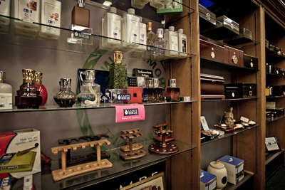

Come and Accessorize at Thomas Hinds

Accessories
At Thomas Hinds Tobacconist we stock a wide range of cigar related accessories such as lighters by brands like Xikar, Siglo, and Lotus, leather cigar cases in most price ranges, and cigar cutters from the very inexpensive to the best quality available. We also feature a large variety of cigar humidors with a range in size, finish, and price. Availability for these products changes throughout the year. Please call or email us with your requirements.
Another product that has been quite popular is the Lampe Berger air purification system. These ceramic jars are filled with a scented fuel. You light them and allow them to burn for two minutes. At this point the flame is blown out, and they will burn for twenty minutes catalytically releasing whatever scent you choose to fill them with into the air. At this point they can be snuffed. We offer a selection of the lamps themselves, along with a variety of the fuels. Special orders for particular lamps or scents can be accommodated easily.
For a special gift, or for someone who truly appreciates a fine, handmade product, we feature the writing instruments of Tim Mikolash. These pens are turned by Tim, and come in a wide variety of materials from carbon fibre, and various woods, to materials like snake skin and ground money. They are available in both ballpoint and fountain pen formats.
A recent departure for us at the store has been the stocking of shaving gear and supplies. We have had a lot of requests for this sort of product and we have been able to source quality items at a good price. At the moment we offer a limited selection of straight razors made by Dovo, and safety razors made by Merkur, along with blades, soaps, and accessories to go along with them. These products can be perfect gifts for that hard to buy for person on your list!
Last but not least; for those that truly appreciate a fine cup of coffee we have Serrano, and Torquino brand coffee from Cuba. While variable, these products are generally available in both ground 250g packages, and for the Serrano we also offer 1 kg packages of beans. Again, availability changes with the seasons and crop conditions.